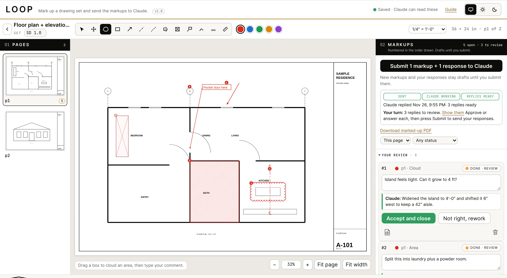
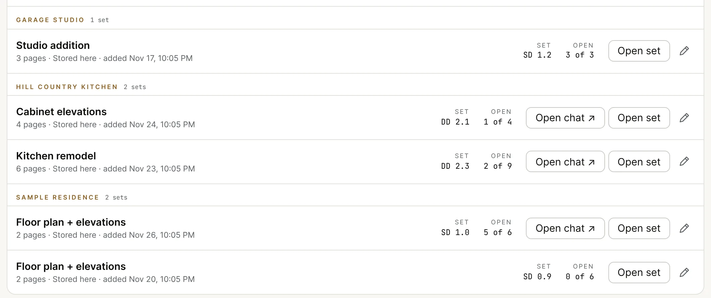

01The cycle
Loop keeps one conversation going on a drawing set. You and Claude take turns, and the page always shows whose turn it is.
- Mark upCloud, centerline, hatch an area, or call out a note on the set.
- SubmitYour markups go to Claude. The page shows Sent, then Claude working.
- ReviseClaude changes the drawings, replies under each markup and issues the next rev.
- ReviewApprove each reply or send it back with a note. Add new markups and submit again.
↻ Repeat until every markup is accomplished or superseded. Each rev starts clean, and the revision log keeps the history.
02What you work in
One page holds the drawing set, your markups and Claude's replies. This is a sample residence in the middle of a review: Claude has answered three markups and it's your turn.

- Drafting toolsCloud, box, arrow, centerline, dashed line, hatched area, remove, callout, pen, highlight and a scaled measure.
- PagesEvery sheet in the set, with a count of the markups on each.
- Markups on the sheetNumbered in the order you draw them. Each one gets a comment in the list.
- Whose turn it isSent, Claude working and Replies ready, plus a plain line saying what to do next.
- Download the PDFYour markups as real comments that open in Bluebeam, Acrobat or Preview.
- Claude's replyClaude answers under each markup. Accept and close it, or send it back with a note.
03Every project in one place
All your sets live in one library, grouped by project, whichever chat they came from. Each set shows its revision and how many markups are still open. Open chat jumps back to the conversation working that set.

Each revision starts clean. The older rev keeps its markups and history, one click back.
04Two ways to use it
Redline Ctrl
Open a PDF in your browser, mark it up, and download it with your comments built in. Send the file back however you like. Nothing is uploaded.
Open Redline CtrlWOODWERD Loop
The same page, running inside your own Claude account. Claude reads your markups, works them, replies under each one and issues the next revision.
Set up Loop05Set up Loop
You need a Claude account that can make artifacts that save data, and a place to upload skills.
- Download the WOODWERD Loop skill (a zip with one SKILL.md file).
- In Claude, open your settings, go to where skills are managed, and upload the zip. You can rename it, for example to your own studio's name, by editing the
nameline in SKILL.md before you zip it again. - Start a chat and say set up WOODWERD Loop. Claude publishes your own private copy of the Loop page from this site's code and gives you the link. Pin it.
- Attach a drawing set and say loop this. Claude loads it into your Loop page and sends the link.
Your Loop page and its markups live only in your Claude account. Nothing goes to WOODWERD. If the page says “Not saving”, your account can't save artifact data, so use Redline Ctrl and send the downloaded PDF to Claude in a chat instead.
06What each one does
| Redline Ctrl | Loop | |
|---|---|---|
| Mark up any PDF (cloud, box, arrow, centerline, dashed, area, remove, callout, pen, highlight, measure) | Yes | Yes |
| Download the PDF with real comments for Bluebeam, Acrobat or Preview | Yes | Yes |
| Open and save PDFs in your own private GitHub repo (optional) | Yes | No |
| Works without an account or install | Yes | No |
| Submit to Claude and see Sent, Claude working and Replies ready | No | Yes |
| Claude's replies under each markup, which you approve or send back | No | Yes |
| Revisions, with a revision log of what was done and what was superseded | No | Yes |